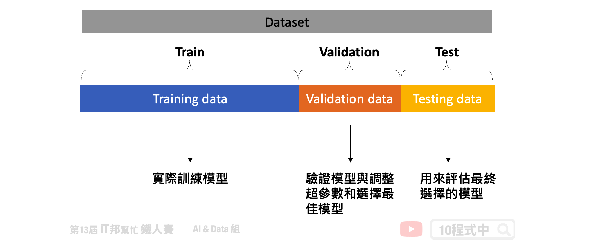
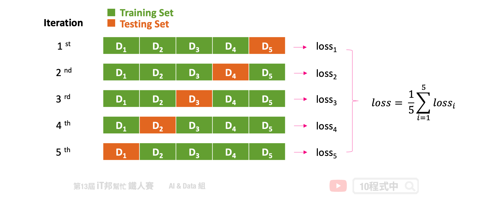
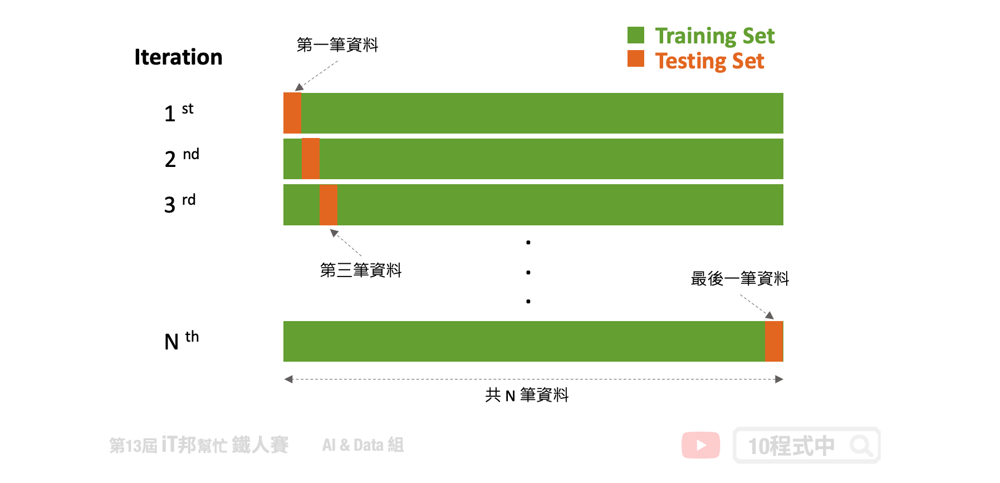
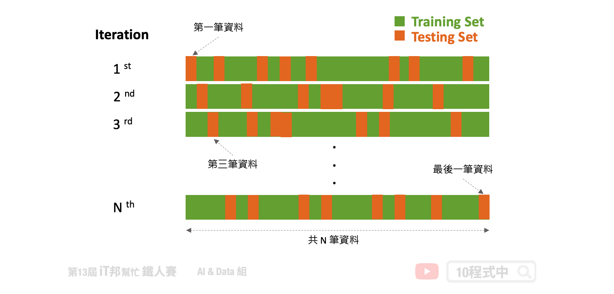
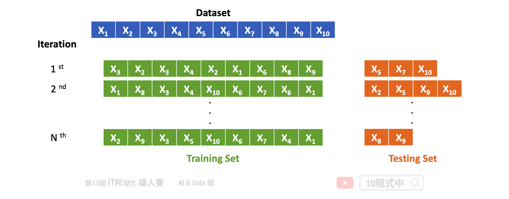

[Day 25] 交叉驗證 Cross-Validation 簡介
今日學習目標
- 常見的交叉驗證方法
- K-fold
- Leave one out cross validation
- Random Subsampling
- Bootstrap
前言
為了避免模型訓練發生過度擬合，通常我們還會從訓練集切一小部分資料出來進行驗證。驗證集的用處則是用來檢視模型在訓練過程中每次的迭代結果訓練的好不好。但該如何切出這個驗證集比較有公信力呢？如果我們僅切一小份的資料他是能有有效的評估訓練時模型的好壞嗎？在某些情況底下單純直接從資料集裡面切一塊出來當驗證集，是沒有辦法很有效的去評估一個模型訓練的好壞。說不定訓練出來的模型在這一份驗證集恰好表現得不錯，如果又隨機抽另一份資料來當驗證集說不定結果會變得很糟糕。這就表示模型泛化能力不足。為了避免這種情況發生並且有效的切割驗證集來評估模型，我們可以採用交叉驗證 Cross-Validation 的技巧來獲得最佳驗證。
什麼是交叉驗證？
在解釋交叉驗證之前我們先來討論將資料集切分為訓練集、測試集和驗證集的問題。在一般狀況下我們會將資料先切割成兩等份，分別為訓練集和測試集。其中在訓練階段模型只會對訓練集進行擬合，另外測試集的資料並未參與訓練，因此可以拿來當作最終評估模型的好壞。但是我們訓練的模型希望找到一個不錯的超參數，使得模型在訓練集和測試集都有不錯的成績，也就是說 loss 要越低越好。因此最常見的作法會將訓練資料再切出一個驗證集來找出一個最佳的模型參數，使得驗證集的表現要最好。但是為了避免模型對於我們所切的驗證集過度擬合，因此可已透過交叉驗證的方法對模型做更好的評估。所謂的交叉驗證簡單來說是將訓練資料進行分組，一部分做為訓練子集來訓練模型，另一部分做為驗證子集來評估模型。用訓練子集的數據先訓練模型，然後用驗證子集去跑一遍，看驗證集的損失函數(loss)或是分類準確率等。等模型訓練好之後，再用測試集去測試模型的性能。主要的交叉驗證法有以下幾個方法:
- Holdout
- K-fold
- Leave one out cross validation
- Random Subsampling
- Bootstrap

Holdout Method
此方法是最經典且最簡單實作的交叉驗證法，Holdout 顧名思義就是將資料切出一部分作為模型評估的依據。在這種方法中，我們將資料隨機分為三部分：訓練集、驗證集和測試集。其中只有訓練集資料實際參與訓練，其餘的資料僅拿來評估模型好壞。驗證集使用時機是在訓練過程中可以檢視訓練的趨勢，若有發現過擬合擬合跡象可以提早發現並解決。以及方便我們進行調整超參數以及選擇最佳的模型。當然僅透過驗證集不能代表全部，因此最後確定好模型時。我們會再拿事先切好的測試集進行最終的評估，檢視模型的泛化能力。

優點:
- 簡單實作。
- 驗證集可以被拿來評估模型在訓練過程中的學習成果。
- 測試集可以評估模型泛化能力。
缺點:
- 當資料集變異量較大時，驗證集與測試集可能無法足以評估模型。
- 不適合用在資料不平衡的資料集。
K-fold Cross-Validation
上一個方法雖然簡單，但是在訓練過程中僅切一份驗證集往往不能夠代表全部。因此我們可以透過一些技巧切割驗證集，使得訓練過程中有一個更公正的評估方式。我們可以透過 K-Fold 方法將訓練資料再依序切割訓練集與測試集，K-Fold 裡面的測試集可以當成驗證集。K-Fold 的方法中 K 是由我們自由調控的，在每次的迭代中會選擇一組作為驗證集，其餘 (k-1) 組作為訓練集。透過這種方式學習，不同分組訓練的結果進行平均來減少方差，因此模型的性能對數據的劃分就不會那麼敏感。

優點:
- 降低模型訓練對於資料集的偏差。
- 訓練集與驗證集完整被充分利用與學習。
缺點:
- 不適合用於資料不平衡的資料集。
- 如果要簡單的 K-fold 來尋找超參數會有資料洩漏問題導致訓練結果有偏差，因為在每個 Fold 中都會使用同一組資料進行驗證。
- 在相同的驗證集計算模型的誤差，當找到了最佳的超參數。這可能會導致重大偏差，有過擬合擬合疑慮。
Leave One Out
此方法是 K-fold 其中一種特例，當 K 等於資料集的數量時就等於 Leave One Out 方法。也就是在每次訓練時僅會把一筆資料當成測試資料，其餘的 N-1 筆資料作為訓練模型的資料。此作法相當簡單明瞭，但是訓練負擔會非常重且耗時。然而 Leave p-out 是另一種技巧，其中的 p 使用者可以自己設定每次訓練需要留幾筆資料作為測試集。

優點:
- 簡單且容易理解，好實作。
缺點:
- 需要花費更多的訓練時間。
Random Subsampling
Random Subsampling 方法是一種簡單且常用的交叉驗證技術，它透過多次隨機抽樣將資料集切割成訓練集與測試集。每次隨機分割時，測試集的比例固定，而訓練集和測試集則隨機選取。這種方法主要透過多次隨機測試不同的資料切分方式來評估模型性能，最後取測試結果的平均值。

優點:
- 多次隨機抽樣能減少資料劃分的偏差。
- 可以靈活選擇訓練和測試集的比例。
缺點:
- 多次重複抽樣需要較大的計算資源。
- 每次隨機抽樣的資料集可能會有所不同，結果不穩定。
Bootstrapping
還有一種比較特殊的交叉驗證方式，Bootstrapping 自助抽樣法。是一種從給定訓練集中有放回的均勻抽樣，也就是說，每當選中一個樣本，它等可能地被再次選中並被再次添加到訓練集中。假設每次訓練都採樣十個樣本，在這十筆資料中很有可能會再次被隨機抽到。剩下沒有抽到的資料則都變成測試集，用來評估訓練完的模型。

優點:
- 能在小數據集的情況下提高模型穩定性。
- 可重複利用相同的數據來進行多次訓練。
缺點:
- 重複樣本可能導致模型過擬合。
- 測試集中資料量較少，可能導致模型泛化能力評估不夠充分。
小結
交叉驗證是訓練模型中非常重要的技巧，尤其是當手邊的資料集有限時更應該使用。透過交叉驗證技巧，即使在數據有限的情況下，我們也能夠獲得準確的結果，並且可以避免模型過度擬合。並為我們提供更準確的模型預測性能估計方式，同時也能夠提升模型的泛化能力。以上的方法可以直接使用 scikit-learn 裡面 model_selection 底下的 cross_val_score 方法進行實作。
本系列教學內容及範例程式都可以從我的 GitHub 取得！